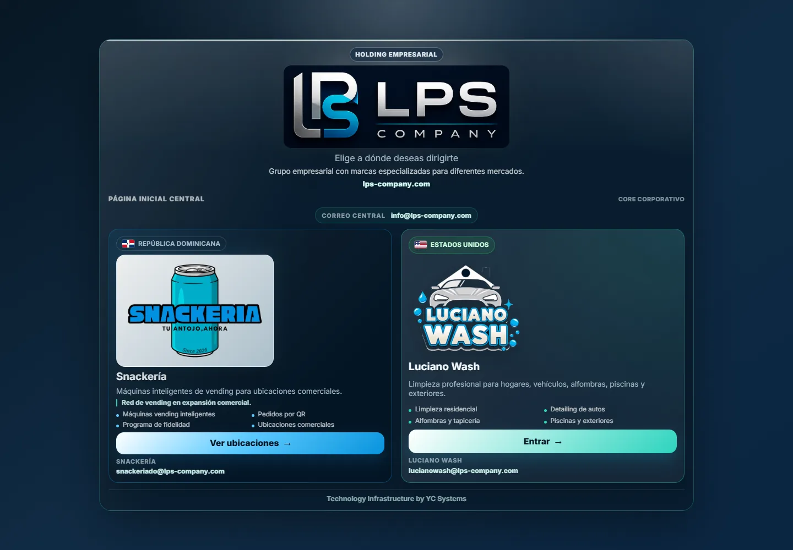
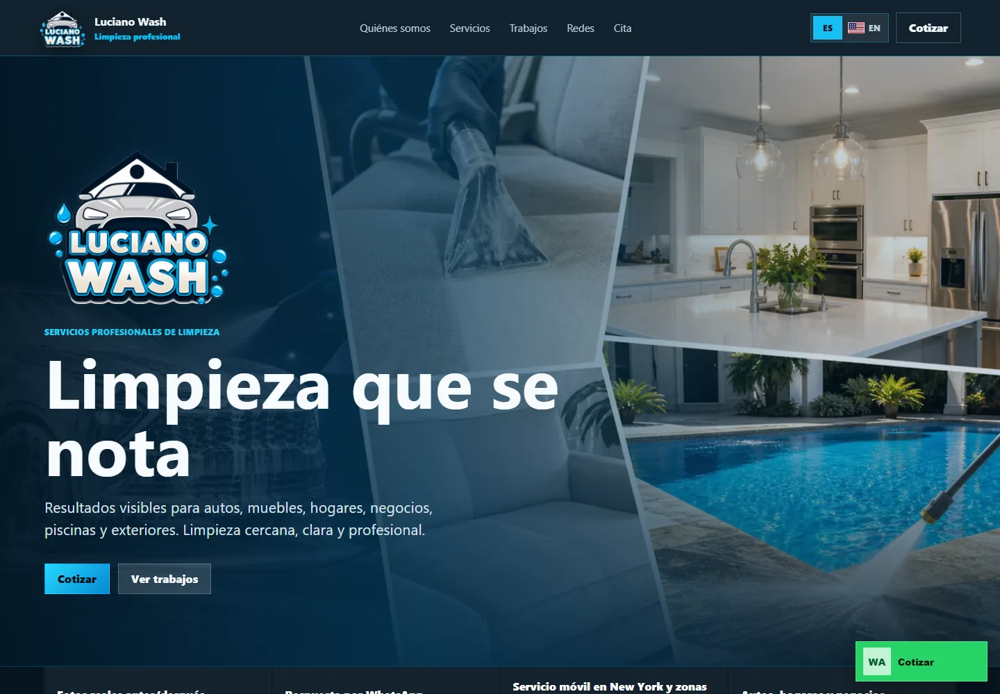
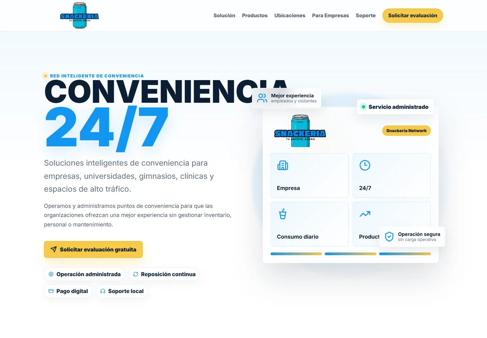

Comercio electrónico
GhostWear
Catálogo, carrito y pedidos conectados a WhatsApp para convertir visitas en conversaciones de venta.
Desarrollo web · YC Systems
Diseñamos y construimos sitios corporativos, catálogos, tiendas y portales con una base clara de experiencia, rendimiento, accesibilidad e integración.


Tipos de proyecto
Cada proyecto comienza con una audiencia, una acción principal y una forma concreta de continuar la relación con el negocio.
Una presencia clara para explicar la empresa, generar confianza y abrir conversaciones comerciales.
Definir este proyecto02Catálogos y comercioProductos, pedidos y pagos organizados alrededor de una experiencia de compra simple.
Definir este proyecto03Campañas y captaciónPáginas enfocadas en una oferta, una audiencia y una acción medible.
Definir este proyecto04Portales y experienciasAccesos, reservas, solicitudes o contenido conectado con el siguiente paso del negocio.
Definir este proyectoBase de entrega
La calidad no termina en la pantalla. Preparamos la web para ser entendida, encontrada, utilizada y mantenida.
Objetivo, audiencia, propuesta, jerarquía y recorridos antes de construir.
Interfaces claras y consistentes en móvil, tableta y escritorio.
Rendimiento, accesibilidad, SEO técnico y validación antes de publicar.
Formularios, analítica, pagos, reservas o herramientas según el alcance.
Método
Cada fase produce algo revisable antes de avanzar y mantiene alineados contenido, experiencia y desarrollo.
Portafolio web
LPS Company, Snackeria, LucianoWash, Antony Real Estate y GhostWear muestran distintos objetivos, industrias y formas de convertir una presencia digital en un canal activo.
Catálogo, carrito y pedidos conectados a WhatsApp para convertir visitas en conversaciones de venta.
Presencia comercial enfocada en confianza, captación y contacto directo con compradores.
Base digital para presentar la empresa, sus marcas y una propuesta comercial coherente.

Experiencia móvil bilingüe con servicios, confianza y contacto rápido por WhatsApp.

Presentación digital compacta para explicar una oferta nueva y activar el primer contacto.
Siguiente paso
Cuéntanos qué quieres presentar, vender o conectar y ordenaremos una primera fase con alcance, prioridades y criterio de lanzamiento.